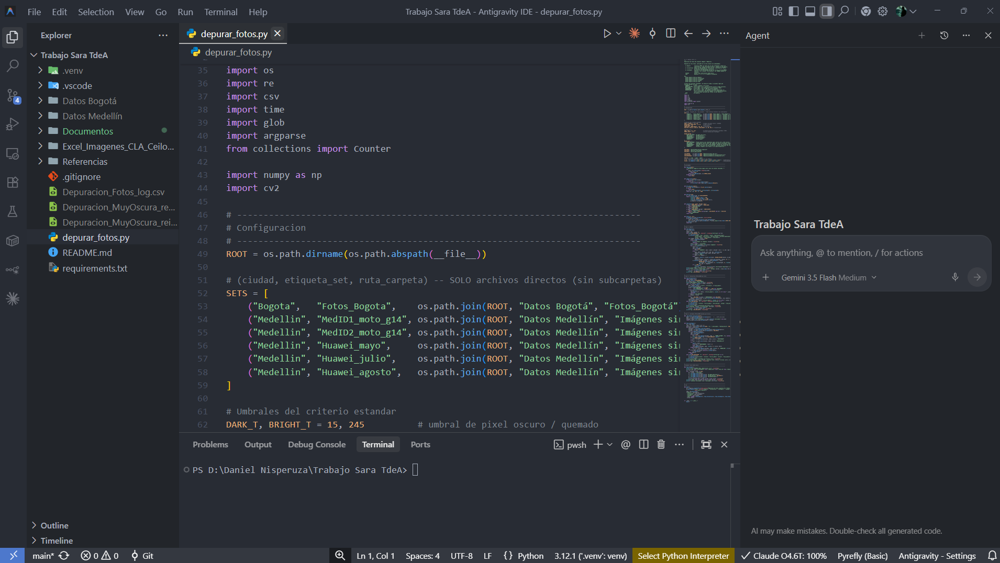

Inteligencia artificial para el desarrollo riguroso de proyectos científicos
El stack de la sesión
Antigravity + VS Code
GitHub
Gemini / Claude
Consensus
Miguel Ángel Garrido Tamayo
Dr. en Ciencias Físicas
Grupo de Investigación CBATA — Tecnológico de Antioquia
Documento de referencia para participantes · Guarda esta memoria: es tu guía de instalación y consulta
Antes de empezar
Cómo usar esta memoria
Durante
Sigue el hilo
Cada módulo del documento corresponde a un bloque de la sesión. Marca aquí lo que vayas dejando instalado.
Después
Instala en casa
Los pasos de instalación están completos: puedes repetirlos solo, en tu equipo, sin ayuda.
Siempre
Consulta rápida
Las últimas páginas son fichas recortables: comandos de Git y plantillas de prompts.
▸Hoja de ruta de la sesión (120 minutos)
#
Módulo
Qué te llevas
Pág.
01
Fundamentos
El papel real de la IA en ciencia y el mapa completo del stack de trabajo.
3
02
Literatura
Consensus: estado del arte basado en evidencia revisada por pares.
4–5
03
Entorno
VS Code y Antigravity instalados y funcionando.
6–7
04
Modelos de IA
Gemini y Claude: acceso, comparativa y prompts rigurosos.
8–9
05
Trazabilidad
Git y GitHub: instalación, configuración y ciclo diario.
10–11
06
Integración
Caso completo, ética del uso de IA y checklist final.
12–14
Una idea para toda la sesión. La IA no sustituye el criterio científico: multiplica la capacidad de ejecutarlo.
Todo lo que genere una IA en este flujo debe quedar verificado, referenciado y versionado.
Investigación Aumentada · Memoria para participantesCBATA — Tecnológico de Antioquia · 2
Módulo 01 · Fundamentos
La IA como copiloto, no como reemplazo
No delegamos el criterio científico: expandimos la capacidad del equipo para ejecutarlo. El diseño, la interpretación y la validación siguen siendo siempre del investigador.
✔ LO QUE LA IA SÍ MULTIPLICA
Procesar volumen — grandes series de datos, literatura y código en minutos en vez de días.
Traducir ideas a código — convertir un modelo teórico o una ecuación en un script ejecutable y probado.
Detectar patrones — señales en los datos o vacíos en la literatura que el ojo humano podría pasar por alto.
Documentar y comunicar — métodos, comentarios de código y borradores con rigor y trazabilidad.
✖ LO QUE LA IA NUNCA REEMPLAZA
Verificación humana — todo resultado generado por IA se revisa, se contrasta y se referencia.
Reproducibilidad — el código, los datos y las versiones deben quedar trazados: por eso usamos GitHub.
Evidencia científica — las afirmaciones se sustentan en literatura revisada por pares, no en la memoria del modelo.
Criterio disciplinar — la interpretación física, estadística o metodológica la hace el equipo investigador.
▸Cuatro herramientas, un solo flujo
Literatura
Consensus
Buscador que responde con artículos revisados por pares.
Entorno
Antigravity + VS Code
Editor con agentes de IA que escriben, prueban y documentan.
Modelos
Gemini / Claude
Los "cerebros" que razonan, generan código y redactan.
Trazabilidad
GitHub
Historial, colaboración y respaldo de todo el proyecto.
▸De la pregunta al artículo: las cinco estaciones
Módulo 01 · FundamentosCBATA — Tecnológico de Antioquia · 3
Módulo 02 · Literatura
Consensus: evidencia, no opiniones
Un buscador de IA que responde preguntas científicas citando exclusivamente artículos revisados por pares. Cada frase generada es trazable a un paper real: ahí está su valor frente a un chatbot genérico.
Consensus Meter — sintetiza si la evidencia disponible respalda, contradice o es mixta frente a una afirmación.
Copiloto de síntesis — genera resúmenes comparativos entre varios estudios, con enlace directo a la fuente.
Por qué importa — reduce drásticamente el riesgo de alucinaciones y de citas inventadas.
Así se lee el Consensus Meter
1Cómo dejarlo listo (menos de 5 minutos)
1
Crear cuenta gratuitaEntra a consensus.app y regístrate con tu correo institucional o tu cuenta de Google.
2
Explorar el planEl plan gratuito permite búsquedas ilimitadas; Premium añade el Copiloto de síntesis y la extracción de tablas.
3
Instalar la extensión (opcional)Disponible para Chrome: verifica afirmaciones científicas mientras navegas cualquier página.
4
Ajustar filtrosConfigura año, tipo de estudio y campo disciplinar antes de tu primera búsqueda.
2La calidad de la respuesta = la calidad de la pregunta
✖ PREGUNTA DÉBIL
“Contaminación del aire”
Demasiado amplia: devuelve miles de resultados sin dirección y obliga a filtrar a mano.
✔ PREGUNTA FUERTE
“¿La altura de la capa límite influye en la dispersión de PM2.5 en zonas urbanas?”
Específica y cerrada: admite evidencia a favor y en contra, que es justo lo que Consensus sintetiza mejor.
Dos reglas que no se saltan. (1) Cruza con Gemini o Claude: pídele que organice los hallazgos de Consensus en una tabla comparativa o en un borrador de estado del arte. (2) Verifica siempre la fuente: abre el artículo original antes de citarlo en tu manuscrito.
Módulo 02 · Literatura con ConsensusCBATA — Tecnológico de Antioquia · 4
Momento práctico I · 10 min
Revisión de literatura en vivo
PREGUNTA DE EJEMPLO
“Influencia de la altura de la capa límite planetaria en la dispersión de PM2.5 en entornos urbanos complejos”
▸En este ejercicio
1 · Formula
Cada participante escribe su propia pregunta de investigación en Consensus.
2 · Contrasta
Identificamos y comparamos 2–3 fuentes citadas, abriendo el artículo original.
3 · Sintetiza
Pedimos a Gemini o Claude que resuma los hallazgos en cinco líneas.
¿La evidencia respalda, contradice o es mixta? ¿Por qué?
Recuerda. Si Consensus no encuentra evidencia para tu afirmación, ese también es un resultado:
puede señalar un vacío en la literatura y, por tanto, una oportunidad de investigación.
Módulo 02 · Momento práctico ICBATA — Tecnológico de Antioquia · 5
Módulo 03 · Entorno
Visual Studio Code: la base del entorno
Editor de código gratuito y multiplataforma (Windows, macOS, Linux), estándar de facto en desarrollo científico. Empezamos aquí porque Antigravity está construido sobre la misma base: la interfaz y los atajos se comparten.
Por qué VS Code
Extensiones clave — Python, Jupyter, GitLens y control de código fuente, en un clic.
Terminal integrada — ejecuta Python, Git y cualquier comando sin salir del editor.
Multiplataforma — el mismo entorno en tu portátil, en el laboratorio y en el servidor.
Consejos que ahorran horas
Guarda la carpeta del proyecto en una ruta sin espacios ni tildes.
Activa el guardado automático: File › Auto Save.
Sincroniza ajustes con tu cuenta de GitHub para no perder configuración.
↓Instalación paso a paso
1
Descargar el instaladorVe a code.visualstudio.com y descarga la versión de tu sistema operativo.
2
Ejecutar la instalaciónWindows: ejecuta el .exe y marca “Agregar al PATH”. · macOS: arrastra la app a Aplicaciones. · Linux: paquete .deb/.rpm o Snap.
3
Instalar la extensión de PythonAbre el panel de Extensiones con Ctrl+Shift+X, busca “Python” e instala la oficial de Microsoft.
4
Verificar la instalaciónAbre la terminal integrada y ejecuta los dos comandos de abajo. Si ambos devuelven un número de versión, ya está listo.
code --versiondebe imprimir la versión de VS Code
python --versiondebe imprimir la versión de Python instalada
⌨Atajos que usarás toda la sesión
Ctrl + Shift + XPanel de Extensiones
Ctrl + Shift + GSource Control (Git)
Ctrl + ñAbrir y cerrar la terminal
Ctrl + BMostrar u ocultar el árbol de archivos
Ctrl + Shift + PPaleta de comandos
Ctrl + `Terminal (teclado inglés)
Módulo 03 · Entorno de desarrolloCBATA — Tecnológico de Antioquia · 6
Módulo 03 · Entorno
Antigravity: de editor a colaborador autónomo
La plataforma de desarrollo agentic de Google: un entorno tipo VS Code con agentes de IA integrados que planifican y ejecutan tareas, no solo autocompletan líneas.
Agent Manager — gestiona uno o varios agentes trabajando en paralelo sobre distintas partes del proyecto.
Artifacts — el agente documenta su razonamiento, capturas y resultados en un panel visual verificable, no solo en el código.
Modelo nativo: Gemini — integración de fábrica, y admite conectar otros modelos como Claude.
Requisitos previos
Cuenta de Google activa.
Conexión estable a internet — los agentes trabajan en la nube.
8 GB de RAM recomendados para proyectos con datos pesados.
↓Instalación paso a paso
1
Descargar el instaladorEntra a antigravity.google y descarga la versión IDE para tu sistema operativo.
2
Instalar como cualquier IDEEl proceso es idéntico al de VS Code: comparten la misma base tecnológica.
3
Iniciar sesión con GoogleObligatorio para autenticar el acceso a los modelos Gemini integrados.
4
Abrir tu carpeta de proyectoFile › Open Folder, o clona directamente un repositorio de GitHub desde el asistente inicial.
▸Primer recorrido: la interfaz en 4 zonas

1
2
3
4
1 · Explorador Árbol del proyecto: carpetas, datos y scripts, igual que en VS Code.
2 · Editor de código Pestañas, resaltado de sintaxis y minimapa del archivo abierto.
3 · Terminal y Git Consola integrada y panel de Source Control para revisar cambios.
4 · Agent Manager Defines la tarea, eliges el modelo (Gemini/Claude) y sigues el progreso.
Los Artifacts —gráficos, notebooks y vistas previas que produce el agente— se abren dentro de la zona 4 o como una pestaña más del editor.
Módulo 03 · AntigravityCBATA — Tecnológico de Antioquia · 7
Módulo 04 · Modelos de IA
Gemini y Claude: acceso e integración
Son los “cerebros” del flujo: razonan, generan código y redactan. Puedes usarlos en el navegador, dentro del editor o mediante una clave de API. Conviene tener acceso a los dos y elegir según la tarea.
Gemini
Conversación y desarrollo · Google
1
Uso conversacionalgemini.google.com con tu cuenta de Google. Ideal para explorar ideas y redactar texto.
2
Google AI Studioaistudio.google.com permite generar una API key para integraciones de desarrollo.
3
Dentro de AntigravityViene disponible por defecto en el selector de modelos del Agent Manager.
FORTALEZA
Gran ventana de contexto: analiza datasets extensos o muchos archivos de código a la vez.
Claude
Razonamiento y rigor · Anthropic
1
Uso conversacionalclaude.ai, con planes Free y Pro. Ideal para razonamiento profundo y redacción científica.
2
Claude Code (CLI)Se instala con npm install -g @anthropic-ai/claude-code (requiere Node.js) y corre en la terminal del proyecto.
3
Consola de desarrolladorconsole.anthropic.com genera la API key para integrarlo en extensiones o agentes.
FORTALEZA
Seguimiento cuidadoso de instrucciones complejas y explicaciones didácticas del código que genera.
▸¿Cuándo usar cada modelo?
Tarea científica
Gemini
Claude
Analizar datasets extensos
Excelente
Muy bueno
Escribir y depurar código complejo
Muy bueno
Excelente
Redactar manuscritos y métodos
Bueno
Excelente
Integración nativa en Antigravity
Nativa
Vía extensión / CLI
Explicar el razonamiento paso a paso
Bueno
Excelente
Práctica recomendada. Formula el mismo prompt a los dos modelos y compara las respuestas:
las diferencias suelen señalar dónde hay un supuesto no declarado.
Módulo 04 · Modelos de IACBATA — Tecnológico de Antioquia · 8
Módulo 04 · Prompts rigurosos
La estructura Rol · Contexto · Tarea
Un buen prompt científico reduce la ambigüedad y, con ella, los errores de la IA. Tres bloques fijos y un resultado esperado explícito: nunca una “caja negra”.
Momento práctico II · 10 min
Pídele a la IA que razone como científico
“Actúa como investigador en capa límite atmosférica (CLA) en zonas urbanas. Aquí está mi dataset. Explica qué hace, detecta posibles errores y sugiere una prueba de validación.”
1 · Trae lo tuyo Un fragmento de código o una ecuación de tu propio proyecto.
2 · Aplica R-C-T Formula el mismo prompt a Gemini y a Claude.
3 · Compara Claridad, precisión y supuestos declarados en cada respuesta.
El control de versiones es innegociable en ciencia reproducible: cualquier resultado debe poder rastrearse hasta la versión exacta del código que lo produjo.
Reproducibilidad
Cada figura y cada cifra se enlazan con el código que la generó.
Historial completo
Autor, fecha y motivo de cada cambio. Nunca se pierde una versión anterior.
Colaboración segura
Varios investigadores en paralelo sin sobrescribir el trabajo ajeno.
Respaldo en la nube
El proyecto vive seguro y accesible desde cualquier equipo.
AInstalar Git y crear tu cuenta
1
Crear cuenta en GitHubVe a github.com y regístrate gratis con tu correo institucional.
2
Instalar GitWindows: instalador de git-scm.com. · macOS: xcode-select --install o brew install git. · Linux: sudo apt install git.
3
Verificar la instalaciónEn la terminal, ejecuta git --version.
4
Iniciar sesión en el editorEn VS Code o Antigravity, el panel de Source Control te pedirá autenticarte con GitHub.
BIdentidad y autenticación
1
Configurar tu identidadQueda grabada en cada commit que hagas (ver comandos abajo).
2
Elegir método de autenticaciónToken de acceso personal (Settings › Developer settings › Personal access tokens) o llave SSH con ssh-keygen.
3
Registrar la llave SSHCopia la llave pública y pégala en GitHub › Settings › SSH and GPG keys.
4
Probar la conexiónssh -T git@github.com debe confirmar tu usuario.
git config --global user.name "Tu Nombre"tu nombre en el historial
git config --global user.email "tu@correo.com"tu correo en el historial
git --versioncomprueba que Git quedó instalado
ssh -T git@github.comcomprueba la conexión con GitHub
Ojo con los datos. Antes del primer push, revisa que no subas datos crudos confidenciales ni claves de API.
Añade un archivo .gitignore con las carpetas de datos pesados y los archivos con credenciales.
Módulo 05 · Git y GitHubCBATA — Tecnológico de Antioquia · 10
Módulo 05 · Flujo de trabajo
El ciclo diario de trabajo con Git
Los dos primeros pasos se hacen una sola vez, al arrancar el proyecto. Los tres siguientes son el ciclo real de cada día: se edita, se confirma, se sube… y se vuelve a editar.
▸Chuleta de comandos
git initiniciar repo local
git clone <url>traer un repo
git statusver qué cambió
git add .preparar cambios
git commit -m "mensaje"confirmar
git pushsubir a GitHub
git pulltraer lo de otros
git log --onelinever el historial
▸Todo desde el editor
Panel de Source Control — muestra los archivos modificados y permite confirmar cambios sin salir del editor.
Historial visual — extensiones como GitLens muestran quién y cuándo cambió cada línea de código.
Branches (ramas) — permiten probar ideas nuevas sin arriesgar la versión estable del proyecto.
Agentes + Git — el agente de IA puede proponer commits descriptivos automáticamente al terminar una tarea.
Momento práctico III
Tu primer commit
“Crea un repositorio para mi proyecto, agrega un archivo README que describa el objetivo de la investigación, y súbelo a GitHub con un mensaje de commit claro.”
1 · Crea un repositorio nuevo en tu cuenta de GitHub.
2 · Clónalo en Antigravity o VS Code y agrega un README.md.
3 · Ejecuta el ciclo completo: add → commit → push, y verifícalo en GitHub.
Módulo 05 · Flujo de trabajoCBATA — Tecnológico de Antioquia · 11
Módulo 06 · Integración total
Un proyecto real, de la pregunta al manuscrito
Así se ve el flujo completo aplicado a un proyecto de monitoreo atmosférico. Cada herramienta entrega su resultado a la siguiente, y todo queda registrado.
▸¿Cuánto cambia en la práctica?
Tarea científica
Sin IA
Con el stack de hoy
Estado del arte (20+ papers)
3–5 días
2–3 horas
Script de limpieza de datos
Medio día
15–30 minutos
Documentar código y metodología
Frecuentemente pospuesto
Generado junto con el código
Recuperar una versión anterior
Copias manuales, riesgo de error
Un clic en el historial de Git
⚖Límites y responsabilidad: ética del uso de IA
Verifica siempre
Ninguna cifra, cita o resultado se publica sin revisión humana directa.
Declara el uso de IA
Sigue la política de tu revista o institución para reportar el uso de herramientas generativas.
Cuida los datos sensibles
No subas datos confidenciales o no publicados a herramientas sin garantías de privacidad.
Prioriza la reproducibilidad
Todo prompt relevante y su resultado deben poder rastrearse igual que el código.
Márcalo durante o después de la sesión. Cuando las diez casillas estén completas, tienes el stack entero funcionando en tu equipo.
Cuentas y accesos
Cuenta de Google (Gemini / Antigravity)
Cuenta en claude.ai o console.anthropic.com
Cuenta gratuita en consensus.app
Cuenta en github.com
Software local
Visual Studio Code instalado
Antigravity instalado y con sesión iniciada
Git instalado y configurado (user.name / user.email)
Primer repositorio clonado y probado (push / pull)
Extensión de Python instalada en el editor
Archivo .gitignore creado en el proyecto
▸Si algo falla: diagnóstico rápido
Síntoma
Qué revisar
“git no se reconoce como comando”
Git no quedó en el PATH: reinstala marcando la opción, o reinicia la terminal.
El push pide usuario y contraseña y falla
GitHub ya no acepta contraseña: usa un token de acceso personal o una llave SSH.
Antigravity no muestra modelos
Verifica que iniciaste sesión con Google y que hay conexión estable a internet.
Python no aparece en VS Code
Instala la extensión oficial y selecciona el intérprete con Ctrl+Shift+P › Python: Select Interpreter.
La IA inventa referencias
Nunca pidas citas a un chatbot general: parte de Consensus y verifica el artículo original.
Regla de oro para llevarte. Si no puedes rastrear un resultado hasta el dato, el código y la fuente que lo sustentan,
ese resultado todavía no está listo para tu manuscrito — lo haya escrito una IA o lo hayas escrito tú.
Cierre · Checklist y diagnósticoCBATA — Tecnológico de Antioquia · 13
Reto final
Ahora es tu turno: monta tu propio flujo
Crea un repositorio para tu proyecto, pide a la IA que documente tu último análisis y haz tu primer commit.
Lleva el resultado a la próxima reunión del grupo.